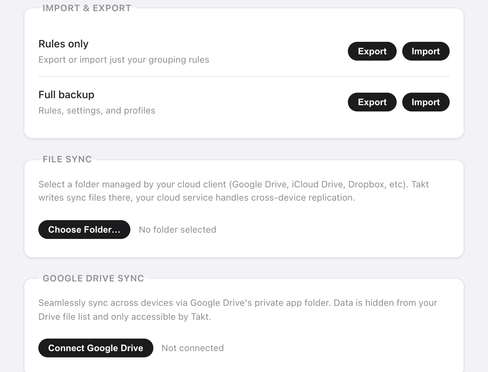

Kurz gesagt: Öffnen Sie die Optionsseite von Takt, gehen Sie zu Settings und wählen Sie eine Methode:
- Export als JSON-Datei: nur Regeln oder ein vollständiges Backup.
- File Sync: Takt schreibt in einen Ordner, den Google Drive, Dropbox oder iCloud Drive für Sie synchronisiert.
- Drive-Synchronisierung: Takt synchronisiert alle 15 Minuten in einen versteckten App-Ordner in Ihrem Google Drive.
Alle drei sind Premium. Keine davon sendet Ihre Daten an einen Takt-Server.
Warum werden meine Chrome-Tab-Gruppen nicht synchronisiert?
Chromes eigene Synchronisierung von Tab-Gruppen verwirrt viele. Zwei Dinge sorgen für Stolpersteine:
- Sie erfordert, dass „Saved tab groups“ in den Synchronisierungseinstellungen jedes Geräts eingeschaltet ist.
- Eine synchronisierte Gruppe landet in der Lesezeichenleiste. Sie öffnet sich nicht von selbst.
Wenn Sie nur ein paar Gruppen auf einem zweiten Computer brauchen, prüfen Sie zuerst diese Einstellung. Sie ist kostenlos und eingebaut.
Takt löst ein anderes Problem. Es synchronisiert Ihre offenen Tabs nicht live. Es synchronisiert die Einrichtung dahinter: Ihre Regeln, Profile, gespeicherten Sitzungen und hibernierten Tabs. Ihre Regeln bauen beim Surfen auf jedem Computer dieselben Gruppen auf. Eine gespeicherte Sitzung öffnet einen ganzen Arbeitsbereich, wenn Sie es möchten.
Wie sichere ich meine Tabs und Regeln in einer Datei?
Unter Settings → Import & Export finden Sie zwei Zeilen:
| Option | Datei | Enthält |
|---|---|---|
| Rules only | takt-rules.json | Ihre Gruppierungsregeln |
| Full backup | takt-backup.json | Regeln, Einstellungen, Profile, gespeicherte Sitzungen und hibernierte Tabs |
Nutzen Sie Rules only, um einen Regelsatz mit einer Kollegin oder einem Kollegen zu teilen. Nutzen Sie Full backup, bevor Sie Chrome neu installieren oder auf einen neuen Computer umziehen.
Beim Import sind Dateien auf 5 MB begrenzt. Regeln und Sitzungen werden zu Ihren vorhandenen hinzugefügt, und solche mit einem Namen, den Sie schon verwenden, werden übersprungen. Ein vollständiges Backup ersetzt außerdem Ihre Einstellungen und Profile durch die aus der Datei.

Wie synchronisiere ich über Dropbox, iCloud oder einen Google-Drive-Ordner?
Nutzen Sie File Sync. Takt schreibt einfache JSON-Dateien in einen Ordner Ihrer Wahl. Ihr Cloud-Client lädt sie hoch wie jede andere Datei.
- Klicken Sie auf Choose Folder… und wählen Sie einen Ordner in Ihrem Drive-, Dropbox- oder iCloud-Drive-Ordner, zum Beispiel
Dropbox/Takt/. - Klicken Sie auf Sync Now. Takt schreibt
rules.json,profiles.json,sessions.json,hibernated.jsonundmeta.json. - Haken Sie Auto-sync on every change an, damit die Dateien etwa 2 Sekunden nach Ihrer letzten Änderung neu geschrieben werden.
- Klicken Sie auf dem anderen Computer auf Import from Folder und wählen Sie denselben synchronisierten Ordner.
Keine Anmeldung, und Sie können die Dateien öffnen und lesen. Jeder Cloud-Dienst mit einem Ordner auf dem Desktop funktioniert.
Der Haken: Es funktioniert pro Computer nur in eine Richtung. Jeder Computer schreibt seine eigene Kopie, und die Daten eines anderen Computers holen Sie mit Import from Folder herein. Verliert Chrome den Zugriff auf den Ordner, zeigt Takt eine Schaltfläche Re-authorize.
Wie funktioniert die Synchronisierung mit Google Drive?
Klicken Sie auf Connect Google Drive und melden Sie sich einmal an. Takt legt seine Dateien im versteckten App-Ordner von Drive ab. Er ist von Ihren Drive-Dateien getrennt und erscheint nicht in der Drive-Oberfläche.
Takt fragt bei Google nur zwei Berechtigungen an:
- Drive-App-Daten: einen Ordner lesen und schreiben, den nur Takt sieht. Ihre anderen Dateien kann es weder auflisten noch öffnen.
- E-Mail-Adresse: um anzuzeigen, welches Konto verbunden ist.
Haken Sie Auto-sync every 15 minutes an, und Takt synchronisiert im Hintergrund. Auf einem neuen Computer verbinden Sie dasselbe Konto und klicken auf Force Pull, um dessen Regeln, Profile und Sitzungen durch die Kopie auf Drive zu ersetzen. Force Push macht das Gegenteil und überschreibt Drive. Beides wirkt sofort und lässt sich in Takt nicht rückgängig machen.
Welche Methode sollte ich nutzen?
| Chromes Synchronisierung von Tab-Gruppen | JSON-Export | File Sync | Drive-Synchronisierung | |
|---|---|---|---|---|
| Was übertragen wird | Gespeicherte Tab-Gruppen | Regeln oder ein vollständiges Backup | Regeln, Profile, Sitzungen, hibernierte Tabs | Regeln, Profile, Sitzungen, hibernierte Tabs, Hibernierungseinstellungen |
| Automatisch | Ja | Nein | Schreiben ja, Import von Hand | Alle 15 Minuten |
| Cloud | Ihr Google-Konto | Keine | Jeder Synchronisierungsordner auf dem Desktop | Nur Google Drive |
| Kosten | Kostenlos | Premium | Premium | Premium |
Noch ein Detail: Takt speichert Regeln, Einstellungen und Profile im Synchronisierungsspeicher von Chrome, der Ihrem Chrome-Konto folgt, wenn die Chrome-Synchronisierung aktiv ist. Sitzungen und hibernierte Tabs bleiben lokal, dafür brauchen Sie also eine der Methoden oben.
Was Backup und Synchronisierung nicht tun
- Keine Live-Spiegelung von Tabs. Offene Tabs auf einem Computer erscheinen nicht auf einem anderen. Speichern Sie eine Sitzung und stellen Sie sie dort wieder her.
- Der letzte Schreibvorgang gewinnt. Änderungen, die gleichzeitig auf zwei Computern gemacht werden, werden nicht zusammengeführt. Bearbeiten Sie auf einem Computer, oder übertragen und holen Sie gezielt.
- Die Drive-Synchronisierung gibt es nur für Google. Für Dropbox, iCloud oder alles andere nutzen Sie File Sync.
Einmal einrichten. Auf jeden Computer mitnehmen.
Zu Chrome hinzufügen — kostenlosHäufige Fragen
Warum werden meine Chrome-Tab-Gruppen nicht synchronisiert?
Chrome erfordert, dass „Saved tab groups“ in den Synchronisierungseinstellungen jedes Geräts eingeschaltet ist, und synchronisierte Gruppen erscheinen in der Lesezeichenleiste, statt sich von selbst zu öffnen.
Synchronisiert Takt meine offenen Tabs live zwischen Computern?
Nein. Es synchronisiert Ihre Regeln, Profile, gespeicherten Sitzungen und hibernierten Tabs. Regeln bauen auf jedem Computer dieselben Gruppen auf, und eine gespeicherte Sitzung öffnet einen ganzen Arbeitsbereich wieder.
Kann Takt meine Google-Drive-Dateien lesen?
Nein. Die Drive-Synchronisierung nutzt nur den App-Daten-Bereich, einen versteckten Ordner, den nur Takt sieht, plus Ihre E-Mail-Adresse, um das verbundene Konto anzuzeigen. Siehe wie Takt Daten lokal hält.
Sind Backup und Synchronisierung kostenlos?
Nein. JSON-Export und -Import, Dateisynchronisierung und Drive-Synchronisierung sind Premium, $3/Monat oder $30/Jahr.